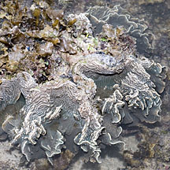
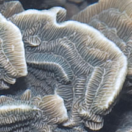
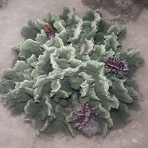
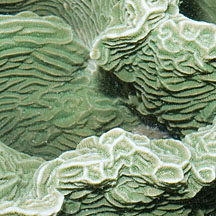
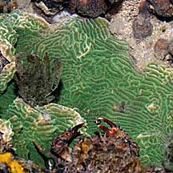
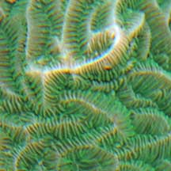

|
|
| hard corals text index | photo index |
| Phylum Cnidaria > Class Anthozoa > Subclass Zoantharia/Hexacorallia > Order Scleractinia > Family Agariciidae |
| Castle
coral Pachyseris rugosa* Family Agariciidae updated Nov 2019 Where seen? This crumpled-looking coral is rarely seen, usually on our undisturbed Southern shores among living corals. 'Pachys' means 'thick' while 'seris' means 'lettuce-like'. 'Rugosa' means 'wrinkled'. Features: Colony (10-30cm across) forming plates that may be encrusting or upright shapes, often irregular and contorted. The surface has short ridges that form maze-like patterns, perpendicular to the edge of the colony. There is a texture of fine lines perpendicular to these ridges. Colours seen include brown, green and blue. Sometimes confused with other leafy hard corals like Lettuce coral (Pavona sp.). Status and threats: This coral is listed as globally Vulnerable by the IUCN. |
 Terumbu Bemban, Jul 11  Fine lines perpendicular to thick ridges. |
 Terumbu Bemban, Jul 11  |
 St. John's Island, Aug 08  Maze-like pattern. |
*Species are difficult to positively identify without close examination.
On this website, they are grouped by external features for convenience of display.
| Castle corals on Singapore shores |
On wildsingapore
flickr
|
| Other sightings on Singapore shores |
|
Links
|